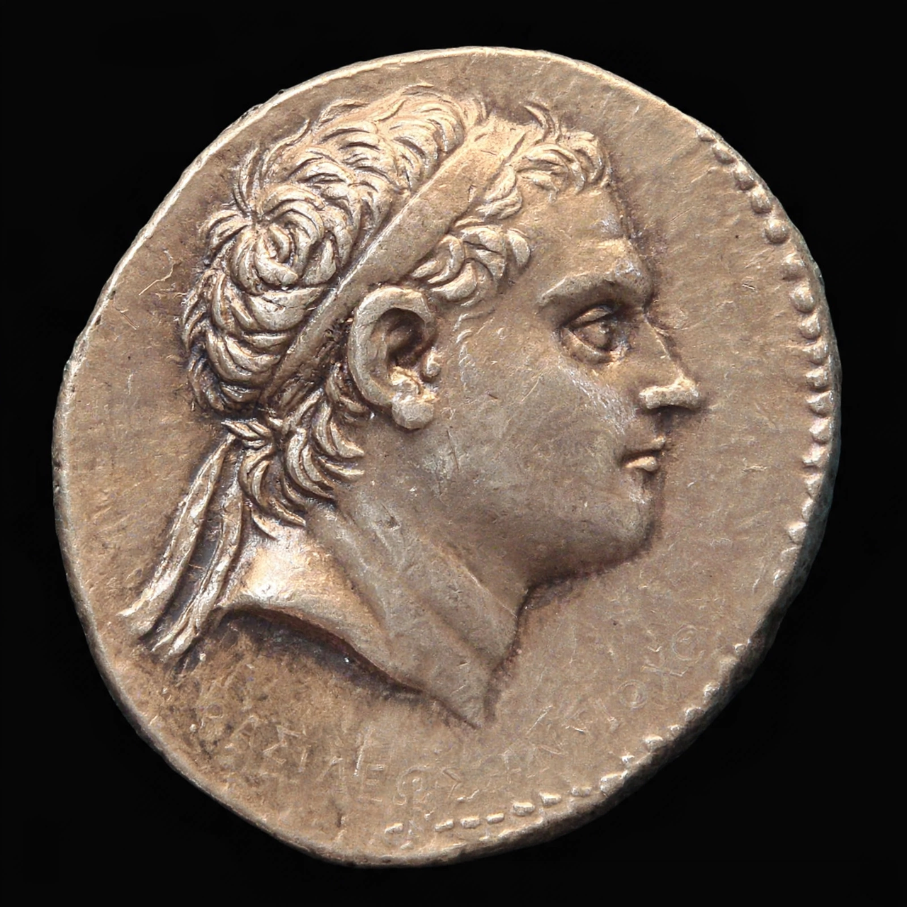

Antiochus III the Great

Antiochus III the Great (Greek: Ἀντίοχος ὁ Μέγας; c. 241 – 187 BC) was a Greek Hellenistic king and the sixth ruler of the Seleucid Empire, reigning from 223 to 187 BC. Succeeding as a teenager amid revolts and losses, he restored the empire's eastern territories in a great anabasis that won him his epithet and comparison with Alexander, before defeat by Rome in the Roman–Seleucid War ended Seleucid power in Asia Minor.
Restoration of the empire
Antiochus inherited an empire weakened by the secession of Bactria and Parthia and revolt in Anatolia and Media, which he suppressed in his first years. After an initial failure in the Fourth Syrian War against Ptolemaic Egypt — defeated at Raphia in 217 BC — he turned east (212–205 BC), marching through Armenia, Media and Parthia to Bactria and the Hindu Kush, renewing nominal Seleucid suzerainty and returning with a vast train of elephants and treasure. In 200 BC he finally conquered Coele-Syria from Egypt at the Battle of Panium.
War with Rome
Antiochus then expanded into Thrace and, encouraged by the exiled Hannibal at his court, intervened in Greece in 192 BC. Rome responded decisively: the Seleucid army was beaten at Thermopylae (191 BC) and crushed at Magnesia (190 BC) by Lucius Cornelius Scipio. The Treaty of Apamea (188 BC) stripped Antiochus of Asia Minor west of the Taurus, imposed a huge indemnity of 15,000 talents, and took his son, the future Antiochus IV, to Rome as a hostage.
Death
Seeking funds for the indemnity, Antiochus attempted in 187 BC to plunder a temple of Bel in Elymais and was killed by the local inhabitants. Despite the Roman defeat, his reign is generally judged the Seleucid Empire's last era of strength.
See also: Seleucid Empire, Parthian Empire, Hannibal.